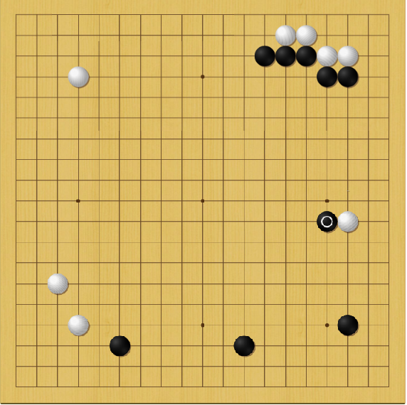

AlphaGo came out of nowhere, took the world of go by storm, turned it upside down, then roughly 18 months later decided that it is time to retire and disappear from the public eyes.
Here are the highlights:
The initial news from January 2016 about AlphaGo defeating Fan Hui was very shocking. To understand why, we should look back at the history of computer-go. The first computer-go programs were developed in the second half of the 20th century and for tens of years they were not able to play better than a relative beginner.
In the early 2000, computer-go made some remarkable progress thanks to a combination of smarter tree-search algorithms (mainly MCTS which stands for Monte-Carlo Tree Search) and access to faster computers. In about 10 years the best computer-go systems went from beginner level to relatively strong amateur ranks, but still about 3 handicap stones away from bottom professional ranks.
After the successful use of MCTS, people gained confidence that a professional level program is within reach, but most people expected to not be able to build one until sometime far in the future - about 10 years was an average estimate to reach 1 dan pro. And here comes Deepmind with a system that not only matches the strength of a 1 dan pro, but actually defeated a 2 dan pro decisively.
Lee Sedol had dominated the international go for the past 10 years. During 2015 he slipped from #1 position to #3 or so, but he was still much stronger than Fan Hui.
Looking at the five official games that Deepmind published from the Fan Hui match, pros found little reason to understand how Deepmind can dare to challenge Lee Sedol.
We heard stories about how Lee Sedol accepted the challenge, how he bragged that he will win 5-0 or 4-1, and how other professionals envied him for making such an easy 1 million USD (which is what Google offered as prize money to the winner). Some people decided that Deepmind must not understand much about go if they make such a challenge, and that this must be little more than some PR stunt.
Everyone was shocked when Lee Sedol lost the first game of the match. People laughed in the beginning at one of AlphaGo's early moves in game 1, which is considered to be 'very weak amateur move' locally. Then they changed their attitude as the game progressed, since AlphaGo started a tough fight, gave Lee Sedol a hard time and then played some brilliant invasion that settled the game.
The match with Lee Sedol will remain in the go history forever. AlphaGo won 4-1, with Lee Sedol winning only game 4, and that by creating a very complicated position and playing a very surprising, brilliant looking move that should not have worked if AlphaGo responded correctly. Lee Sedol was basically lucky to uncover a bug (or weakness) in AlphaGo.
AlphaGo played some surprising moves, which professionals praised as deep and innovative.
In fact many professionals analyzed all five games in detail. While they were very surprised about how much AlphaGo improved in 5-6 months, between the match with Fan Hui and the one with Lee Sedol, the prevailing conclusion was that maybe Lee Sedol lost not so much due to AlphaGo being necessarily stronger than him, but due to him changing his style which led to him playing suboptimally, as a consequence of starting the match with the wrong expectations about his opponent's strength, and playing against a computer system for the first time in an official match.
Some professionals were more generous in their estimation of AlphaGo's strength. The go legend Nie Weiping said that AlphaGo's endgame is 13 dan in strength.
Deepmind published detailed game analysis of all five games, as well as of three of AlphaGo's self-play games. The analysis included some of the variations that AlphaGo suggested at some points during the game.
Most shocking was to see AlphaGo playing some early contact moves against the opponent's frameworks, adding to the novelties that AlphaGo showed during the Lee Sedol match (such as shoulder-hit on the 5th line in game 2).
Most people were impressed not so much about the severe score itself, but about the manner in which the games were won by AlphaGo and by another long list of novel moves it used (most notably invading very early at 3-by-3 points when the opponent played at 4-by-4 in an empty corner).
Unlike in the Lee Sedol games where it was not very evident if AlphaGo is significantly stronger than top professionals, these game were mostly won decisively by AlphaGo, with most games' fate being decided in the first 50 moves.
When one plays with an opponent around the same level, one will be able to find what went wrong. This is not what happened in most of the Master games: on the contrary, in these games AlphaGo seems to just slip ahead by playing very simple moves, sometimes bad-looking moves that it somehow manages to make good use of later in the game.
Not knowing why one lost happens when one plays with a much stronger opponent, and this is what happened between humans and AlphaGo during the 60 Master games.
This time people recognized AlphaGo's superior strength. Some still found an excuse for humankind: the fact that all 60 games were played under short time limits.
According to professional estimates I heard, playing fast go affects a pro's level of course, but by much less than people would normally think: I heard estimations between 2 and 4 points per game.
When Ke Jie played with the Master version and lost his fast games in a categorical fashion, he declared that humans have only explored very little of the depth of go.
Ke Jie lost all three games with long time settings against AlphaGo in the May 2017 match, thus settling once and for all any doubt people would have about the superiority of AlphaGo over humans. The team of five Chinese pros also lost their consultation game - unfortunately they didn't seem to have played better together compared to any one playing separately in a regular game.
The first AlphaGo version we saw, the one that defeated Fan Hui, played a very human-like game, by comparison with other MCTS-based programs that humans were used to. If anything, it played very soft, which was criticized by professionals and taken as a sign of weakness.
Each new version that followed surprised us in some way, and delighted us with new, creative moves:
Here is one illustration of AlphaGo's innovative style from one of the 50 self-play games published after the China event: it shows both the very early 3x3 invation (which white did in the upper-right) as well as very non-human-like play such as the attachment from outside onto the lonely white stone on the right:
How strong is AlphaGo exactly? Without any human being able to defeat it, and without playing official games with handicap or reverse komi, it is impossible to say for sure.
We can make use of the data we have so far and try our best guess.
Looks like Deepmind calls a new AlphaGo version once it can defeat the previous one by 3 stones handicap. Deepmind explained that self-play handicap stones don't translate one-to-one to human handicap, because in a handicap game, the AlphaGo playing black will tend to play slack in the beginning. Let's discount for that by saying it is really a 2 stones difference (counting in human handicap stones units)
In amateur ranks, one stone handicap corresponds to one level difference, however in professional ranks that is not the case anymore. Traditionally, in Japan the difference between a top 9 dan pro and a bottom 1 dan would be about (or almost) 3 stones. This may be different recently in China and Korea, but let's go with that estimate.
The AlphaGo that defeated Fan Hui may have been 1 stone stronger than him, which puts it around mid-pro level, or 4-5 dan.
The AlphaGo that defeated Lee Sedol was more than 3 stones stronger than the Fan Hui version, in self-play games. - that would put the Lee Sedol version of AlphaGo at 10-11 dan (by counting 3 pro ranks for each handicap stone difference). This seems consistent with the pros perception that Lee Sedol was not completely overplayed by AlphaGo.
Next up was the Master version, which defeated the Lee Sedol version with 3 stones handicap. This is again 2 stones in human handicap, or about 6 pro level. That puts Master's level at 16 dan.
We don't know how much stronger the Ke Jie version is - it came 5 months after Master version, which is the time interval that previous versions improved by 3 stones. Deepmind said that they found much faster ways to train; on the other hand, the stronger it gets the harder it is to improve. Let's assume that this time it improved only by one human stone from the Master version. That puts the AlphaGo version that played Ke Jie at 19 dan on the human scale.
In other words, the difference between AlphaGo and Ke Jie is larger than the difference between Ke Jie and the weakest professional out there.
By the way, the legendary Nie Weiping estimates AlphaGo to be 20 dan!
The only moves of AlphaGo that we can criticize are some bad moves it plays during the small endgame stage. The reason for these moves is that AlphaGo always chooses the move with highest chance of winning the game. Sometime, it picks a move that is definitely suboptimal, basically throwing away points, but still maintaining an advantage.
From the human perspective, this looks either silly or suspicious: there are always voices that cry 'conspiracy' and claim that this somehow shows some on-purpose strategy to make the games look closer than they are, etc - which is just nonsense.
Conspiracy theories aside, it would be interesting to see how a system that is trained on a combination of winning probability (primarily) and also optimizing for increasing the points gap (as a secondary goal), would look like. Most likely it will look more human!
Next day after the last game with Ke Jie, Deepmind made a shocking announcement that the AlphaGo team will switch to applying AI to other domains, and stop focussing on improving AlphaGo in a competitive way.
They released 50 games from AlphaGo self-play on long time settings. These games seem to be played by the latest (last?) version of AlphaGo, the one that played against Ke Jie, if we judge by the patterns we see in the games, and these may well be the last games we will ever see from AlphaGo.
AlphaGo had a profound impact in the go community. For professional go players in particular, it must have been initially extremely shocking and threatening to see a computer system beat them at what was traditionally seen as human-only skill. Hopefully the positive impact on the go world will balance out the negative perception, and systems similar to AlphaGo in the future will help develop go further.
Outside of the go community, AlphaGo had a very large impact as well: after the Lee Sedol match, the South Korean society seems to have moved towards having a greater awareness of the value of science in general, with larger investments in AI and more politicians being recruited among people with strong scientific background.
I feel that AlphaGo is a great lesson for the human society worldwide: it teaches and warns us in a gentle way about the effects of AI in our lives. AI will disrupt our lives more and more in the coming years in much bigger ways than just games, regardless of whether we want or expect it, or not, and we need to be aware of that, be prepared and plan ahead.
Deepmind AlphaGo main web page.
Report about the AlphaGo event in Korea - the historical Lee Sedol match.
Report about the AlphaGo event in China, including the Ke Jie match.
Deepmind videos including the full matches from the Korea and China events.
American Go Association videos including more professional commentaries on the AlphaGo games.
Hajin Lee on the background story of the AlphaGo vs Lee Sedol match.
Hajin Lee on the professionals' reactions to the 60-0 series by Master against top-pros.
Shorter article with some illustrations from the Master games.